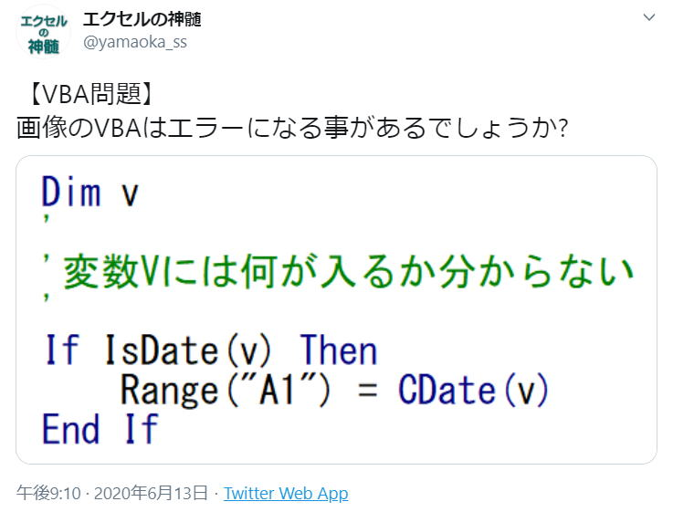
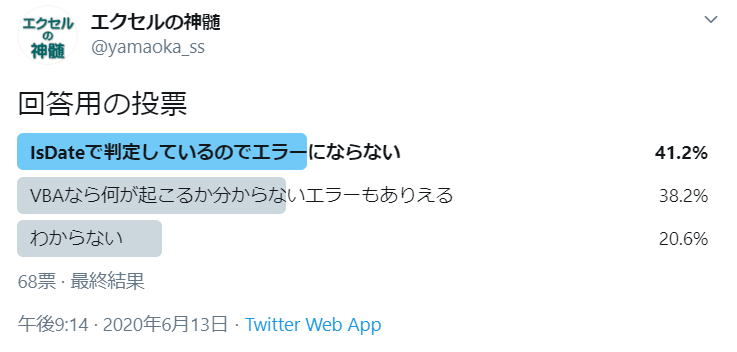

https://twitter.com/yamaoka_ss/status/1271776939343110146
【VBA問題】
画像のVBAはエラーになる事があるでしょうか?

回答用の投票
・IsDateで判定しているのでエラーにならない
・VBAなら何が起こるか分からないエラーもありえる
・わからない

エラーにならないが41.2%と一番多くなりました。
さて、答えはどうなのでしょうか。
以下のツイートからの一連のスレッドで解説しています。
https://twitter.com/yamaoka_ss/status/1271838985011122181
結構割れましたね。
では答えです、
答えは「エラーになる場合がある」
どんな場合にエラーになるか。
言って見れば、ここが問題です。
細かいことを書いていると結構長くなりそうです。
IsDate関数は、日付変換可能かの判定をします。
つまり、IsDateでTrueならCDate関数でエラーになりません。
では、でなぜ先のVBAはエラーになる事があるのか、、、
CDate関数ではエラーにならないのですが、Range.Valueへの代入でエラーになる場合があります。
エラーになるのは、
1899/12/29以前の日付を入れた時です。
微妙ですよね、12/29って何?12/30は?
1899/12/30はエラーになりません。
ここが不思議なところです。
セルに入れられる日付は1900/1/0以降です。
えっ、"1/0"って何?
セルに、
=DATEVALUE("1900/1/1")-1といれると0となります。
これを表示形式で日付けにすると、1900/1/0となります。
ご存じの通り1900/1/1のシリアル値が1です。
従って0は1899/12/31なのですが、そのような表示がエクセルには無いからです。
=DATEVALUE("1900/1/1")-2といれると、セル幅いっぱいに#表示になります。
シリアル値がマイナスとなり、マイナス数値を日付形式にした場合にこのような表示になります。
VBAで日付けをセルに入れた時、シリアル値がマイナスになる日付はエラーとなります。
あれ、でも、1899/12/30はエラーにならない、これと矛盾していませんか、、、
v = "1900/1/1"
として先のVBAを実行すると、セルには1900/1/2と表示されます。
VBAとシートで1日ずれています。
VBAで1899/12/31をセルに入れると1900/1/1シリアル値1
VBAで1899/12/30をセルに入れると1900/1/0シリアル値0
VBAで1899/12/29をセルに入れるとマイナス1なのでエラーとなります。
ではVBAの日付とシートの日付が全てずれているかと言うと、もちろんそんなことはありません。
1900/3/1以降は一致します。
つまり、それより前の日付がずれてしまいます。
これは、シートの日付に1900/2/29が存在しているからです。
1900年はうるう年ではないのに、シートでは1900/2/29が存在しています。
（この理由については省略します。）
しかし、VBAでは1900/2/29は存在しないので、そこで1日ずれてしまっています。
話を戻します。
では、1899/12/29以前が全部エラーとなるかと言うと、これも簡単な話ではありません。
v= "100/1/1"とした場合、これはマイナスのシリアル値なのでエラーになります。
v= "99/1/1"これはエラーになりません。
でも、シートには1999/1/1と表示されます。
VBAでは、100/1/1以降のデータしか扱えません。
CDate("99/1/1")これは1999/1/1となります。
2桁年はCDateでは1900年が加算されます。
これは、DateSerialでも同じです。
DateSerial(99, 1, 1)これは1999/1/1となります。
以上の事からエラーになるのは、
100/1/1から1899/12/29
この範囲の日付に変換可能な値が変数vに入っていた時にエラーになります。
Date関数Date関数は、現在のシステムの日付を返します、バリアント型(内部処理形式DateのVariant)の値を返します。Date関数 Date 現在の日付を設定するには、Dateステートメントを使います。使用例． MsgBoxDate…2013/06/09システムの日付が表示されます。
DateAdd関数DateAdd関数は、指定された時間間隔を加算した日付を返します、バリアント型(内部処理形式StringのVariant)で返します。DateAdd関数 DateAdd(interval,number,date) interval 必ず指定します。
DateDiff関数DateDiff関数は、2つの指定した日付の時間間隔を表す値を返します。ワークシート関数のDATEDIF関数とはスペルも引数も違います、さらに、年の計算は違ったものとなっていますので注意してください。DateDiff関数 DateDiff(interval,date1,date2[,firstdayofweek[,
DatePart関数DatePart関数は、日付の指定した部分の値を返します、バリアント型(内部処理形式DateのVariant)の値を返します。DatePart関数 DatePart(interval,date[,firstdayofweek[,firstweekofyear]]) interval 必ず指定します。
DateSerial関数DateSerial関数は、引数に指定した年、月、日に対応する日付を返す関数です、バリアント型(内部処理形式DateのVariant)の値を返します。DateSerial関数 DateSerial(year,month,day) year 必ず指定します。
DateValue関数DateValue関数は、日付を表す文字列式を日付に変換します、バリアント型(内部処理形式DateのVariant)の値を返します。DateValue関数 DateValue(date) date は必ず指定します。引数dateには、通常、100年1月1日から9999年12月31日までの範囲の日付を表す文字列式を指定します。
Year関数Year関数は、日付から年の値を返します、バリアント型(内部処理形式IntegerのVariant)の値を返します。Year関数 Year(date) date 必ず指定します。引数dateには、日付を表すバリアント型(Variant)の値、数式、文字列式、またはこれらを組み合わせた値を指定します。
Month関数Month関数は、日付から何月かを表す月の値を返します、バリアント型(内部処理形式IntegerのVariant)の値を返します。Month関数 Month(date) date 必ず指定します。引数dateには、日付を表すバリアント型(Variant)の値、数式、文字列式、またはこれらを組み合わせた値を指定します。
Day関数Day関数は、日付から何日かを表す日の値を返します、バリアント型(内部処理形式IntegerのVariant)の値を返します。Day関数 Day(date) date 必ず指定します。引数dateには、日付を表すバリアント型(Variant)の値、数式、文字列式、またはこれらを組み合わせた値を指定します。
MonthName関数MonthName関数は、指定された月を表す文字列を返します。MonthName関数 MonthName(month[,abbreviate]) month 必ず指定します。月を示す数値を指定します。
Weekday関数Weekday関数は、何曜日であるかを表す整数を返します、バリアント型(内部処理形式IntegerのVariant)の値を返します。Weekday関数 Weekday(date,[firstdayofweek]) date 必ず指定します。
WeekdayName関数WeekdayName関数は、指定された曜日を表す文字列を返します。WeekdayName関数 WeekdayName(weekday,abbreviate,firstdayofweek) weekday 必ず指定します。曜日を示す数値を指定します。
IsArray関数IsArray関数は、変数が配列であるかどうかを調べ、結果をブール型(True,False)で返します。IsArray関数 IsArray(varname) varname 必ず指定します。引数varnameには、変数の識別子を指定します。
IsDate関数IsDate関数は、式を日付に変換できるかどうかを調べ、結果をブール型(True,False)で返します。IsDate関数 StrConv(string,conversion,LCID) expression は必ず指定します。日付や時刻として認識できる日付式または文字列式を含むバリアント型(Variant)の式を指定します。
IsEmpty関数IsEmpty関数は、変数がEmpty値かどうかを調べ、結果をブール型(True,False)で返します。IsEmpty関数 IsEmpty(expression) expression 必ず指定します。引数expressionには、数式または文字列式を含むバリアント型(Variant)の式を指定します。
IsNumeric関数IsNumeric関数は、式が数値として評価できるかどうかを調べ、結果をブール型(True,False)で返します。IsNumeric関数 IsNumeric(expression) expression 必ず指定します。引数expressionには、数式または文字列式を含むバリアント型(Variant)の式を指定します。
IsMissing関数プロシージャを呼び出すときに省略可能なバリアント型(Variant)の引数がプロシージャに渡されたかどうかを調べるために使用します。IsMissing関数 IsMissing(argname) 引数argnameは必ず指定します。引数argnameには、プロシージャの省略可能なバリアント型(Variant)の引数の名前を指定します。
IsObject関数識別子（主にバリアント変数）がオブジェクト変数を表しているかどうかを判断する場合に使用します。バリアント変数がオブジェクト変数を表しているかどうかを示すBoolean値（True/False）を返します。IsObject関数の構文 Isobject(識別子) 識別子は、主にバリアント変数名を指定します。
TypeName関数TypeName関数は、引数で指定された変数に関する情報を文字列で返します。TypeName関数 TypeName(varname) varname 必ず指定します。引数varnameには、ユーザー定義型の変数を除く、任意のバリアント型(Variant)の変数を指定します。
VarType関数VarType関数は、引数に指定された変数の内部処理形式を表す整数型(Integer)の値を返します。VarType関数 VarType(varname) varname 必ず指定します。引数varnameには、ユーザー定義型の変数を除く、任意のバリアント型(Variant)の変数を指定します。
CBool関数CBool関数は、引数をBoolean型（True,False）に変換します、式がゼロの値に評価される場合Falseを返し、それ以外の場合はTrueを返します。CBool関数 CBool(expression) 引数expressionには任意の文字列式または数式を指定します。
CByte関数CByte関数は、引数をByte型（0～255）に変換します。CByte関数 CByte(expression) 引数expressionには任意の文字列式または数式を指定します。この引数は必ず指定します。
CCur関数CCur関数は、引数をCurrency型（通貨型）に変換します。CCur関数 CCur(expression) 引数expressionには任意の文字列式または数式を指定します。この引数は必ず指定します。
CDate関数CDate関数は、引数の数値または文字列をDate型（日付型）に変換します。CDate関数 CDate(expression) 引数expressionには任意の文字列式または数式を指定します。この引数は必ず指定します。
CDbl関数CDbl関数は、引数をDouble型（倍精度浮動小数点数型）に変換します。CDbl関数 CDbl(expression) 引数expressionには任意の文字列式または数式を指定します。この引数は必ず指定します。
CDec関数CDec関数は、引数をDecimal型（10進型）に変換します。CDec関数 CDec(expression) 引数expressionには任意の文字列式または数式を指定します。この引数は必ず指定します。
CInt関数CInt関数は、引数をInteger型（整数型）に変換します。CInt関数 CInt(expression) 引数expressionには任意の文字列式または数式を指定します。この引数は必ず指定します。
CLng関数CLng関数は、引数をLong型（長整数型）に変換します。CLng関数 CLng(expression) 引数expressionには任意の文字列式または数式を指定します。この引数は必ず指定します。引数がLong型（長整数型）に変換できない場合はエラーとなります。
CLngLng関数,CLngPtr関数CLngLng関数は、引数をLongLong型に変換します。CPtr関数は、引数をLongPtr型に変換します。CLngLng関数 CLngLng関数は、引数をLongLong型に変換します。LongLongデータ型 64ビット(8バイト)の符号付き数値です。
CSng関数CSng関数は、引数をSingle型（単精度浮動小数点数型）に変換します。CSng関数 CSng(expression) 引数expressionには任意の文字列式または数式を指定します。この引数は必ず指定します。
CStr関数CStr関数は、引数をString型（文字列型）に変換します。CStr関数 CDec(expression) 引数expressionには任意の文字列式または数式を指定します。この引数は必ず指定します。
CVar関数CVar関数は、引数をVariant型（バリアント型）に変換します。CVar関数 CVar(expression) 引数expressionには任意の文字列式または数式を指定します。この引数は必ず指定します。
CVErr関数CVErr関数は、指定した数値(エラー番号)を、バリアント型のエラー値に変換した値を返す変換関数です。CVErr関数 CVErr(errornumber) errornumberには、任意の数値(エラー番号)を指定します。この引数は必ず指定します。